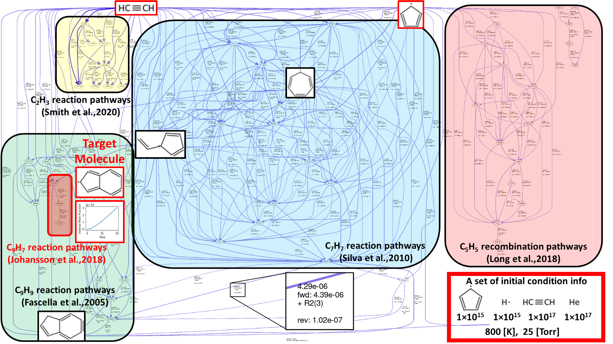
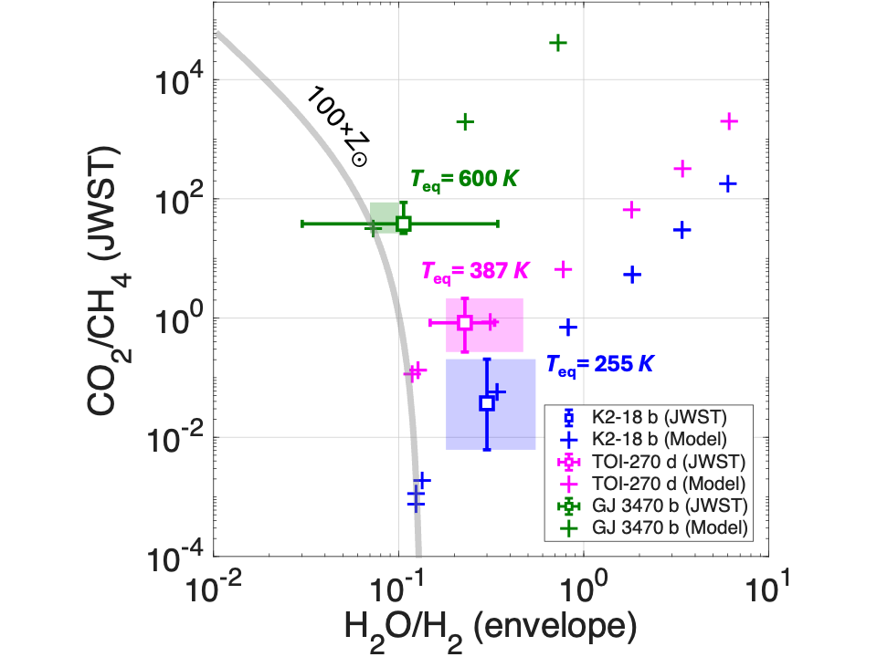

Exoplanet Atmospheres
Theory • Modeling • JWST ObservationsOriginally trained in chemical engineering as a Physical Chemist, I develop first-principles models and combine observations to understand the physics and chemistry of Exoplanet Atmospheres. Ultimately, I hope to use these insights to identify Habitable Worlds and search for Life beyond Earth. Selected research highlights are presented below.
Automated Chemical Network Generation for Exoplanet Atmospheric Modeling

Chemical reaction networks are the foundation of exoplanet atmospheric modeling. Traditionally, these networks have been constructed manually,
making them subjective, labor-intensive, and increasingly difficult to maintain as chemical complexity grows. To address this challenge, I
developed an automated workflow that integrates the Reaction Mechanism Generator (RMG),
a rate-based algorithm widely used in chemical engineering to model combustion systems, with the
ExoPlanet Atmospheric Chemistry & Radiative Interaction Simulator (EPACRIS).
This innovative and unique framework automatically generates chemically self-consistent reaction networks for diverse planetary atmospheres, enabling atmospheric models
to capture substantially greater chemical complexity while minimizing manual intervention. Since its development,
EPACRIS has been successfully applied to planetary atmospheres
spanning from terrestrial planets to gas giants. Together, RMG and
EPACRIS provides a scalable, first-principles framework for
interpreting the rapidly expanding stream of observations from the James Webb Space Telescope (JWST)
and future observatories.
Using Atmospheric CO2/CH4 to Infer the Envelope H2O/H2 Ratio

Constraining the H2O/H2 ratio of sub-neptunes is a central goal of exoplanet science, as it reveals where the most common types of exoplanet formed relative to the "snowline" and provides key insights into planetary formation mechanism. However, water is often difficult to measure because it can form clouds deep in the atmosphere, hiding it from observations. While carbon monoxide has traditionally been used as an indirect tracer of the deep oxygen abundance, its weak spectral features make it challenging to detect with the JWST. To overcome this limitation, I developed a new chemical diagnostic that uses the atmospheric CO2/CH4 ratio to infer the bulk-envelope H2O/H2 ratio. This framework enables observers to constrain the bulk oxygen abundance of gas giant planets and reconstruct their formation histories from atmospheric observations, such as using the JWST.
A First-Principles Framework for the Origin of Sub-Neptune Aerosols

Yang, Kempton & Savel, 2026, ApJL
Many sub-Neptune exoplanets exhibit featureless transmission spectra, indicating that their atmospheres are obscured by thick aerosol hazes. Recent JWST population study also revealed a striking parabolic trend between atmospheric haziness and planetary temperature. Remarkably, an almost identical trend has long been observed in combustion systems such as diesel and jet engines. Drawing on concepts from Combustion Chemistry, I developed a first-principles framework showing that deep atmospheric hydrocarbon chemistry naturally produces soot precursors that are transported upward to form high-altitude hazes. This mechanism successfully reproduces the observed parabolic trend, providing a new framework for understanding aerosol formation in sub-Neptune atmospheres. The work was featured in an official University of Chicago press release highlighting the interdisciplinary connection between chemical engineering and exoplanet science.